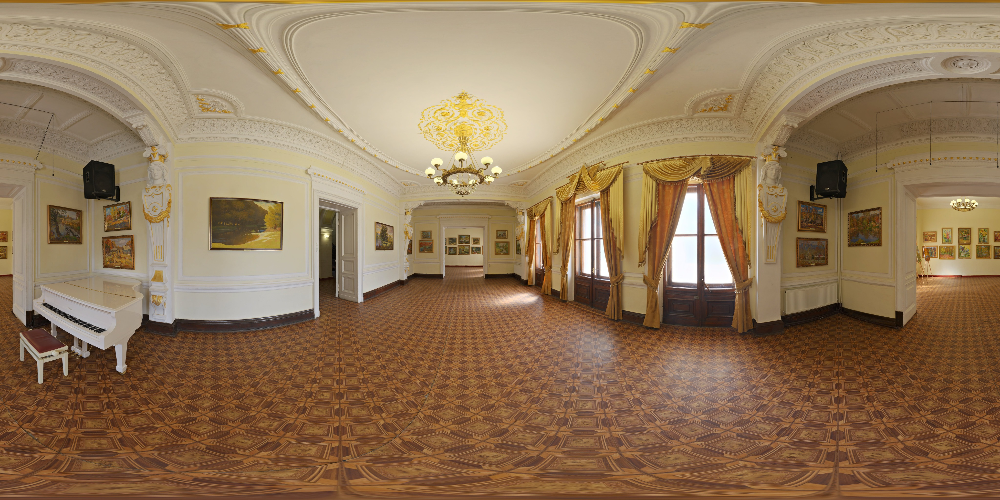
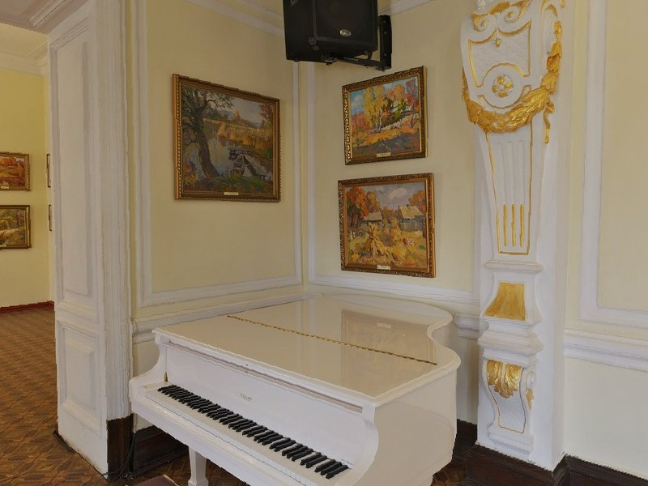

进入漫游
先点一下画面。桌面端会锁定鼠标，手机端直接拖动环视。
UNSEEN 体验原型
照片不只是被打开，它会被放回大致朝向。点一个照片钉点，靠近，再左右转头， 看见谁拍到了什么，也看见哪个方向没有人拍到。


照片留在原地，不会跟着相机转
先点一下画面。桌面端会锁定鼠标，手机端直接拖动环视。
瞄准空间里的照片钉点，再点一下，相机会转向并略微靠近。
照片会留在原地。转到空方向时，画面会提示“这个方向没有人拍到”。
演示使用本地占位素材，实际效果取决于空间全景与宾客照片。